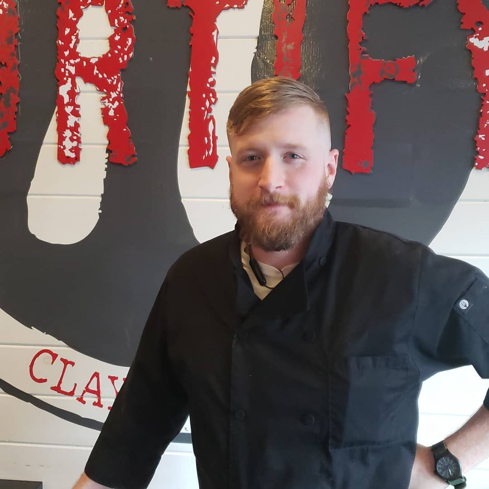

About Me
I have worked in the culinary field for more than a decade and though
I am now attempting to leave it, I still have a spot for it and hope
that future proscpective chefs and cooks can learn something from this
site. The foodservice industry is fast paced and cut-throat to certain
degree but it can be rewarding and amazing for the right kind of
person. I found this to be the case for the better part of 13 years,
and while I may no longer desire to be a chef, the passion and love of
food is still there. I currently am the Chef de Cuisine at
Fortfiy Pi
in Clayton, Georgia and am studying Web Application Development at
North Georgia Technical College. If you wish to sample my food drop by
Fortify Pi and check it out, and if you find yourself there on a
Friday or Saturday night let me know you are there and I'll come say
"hey". -Ryne Brown
